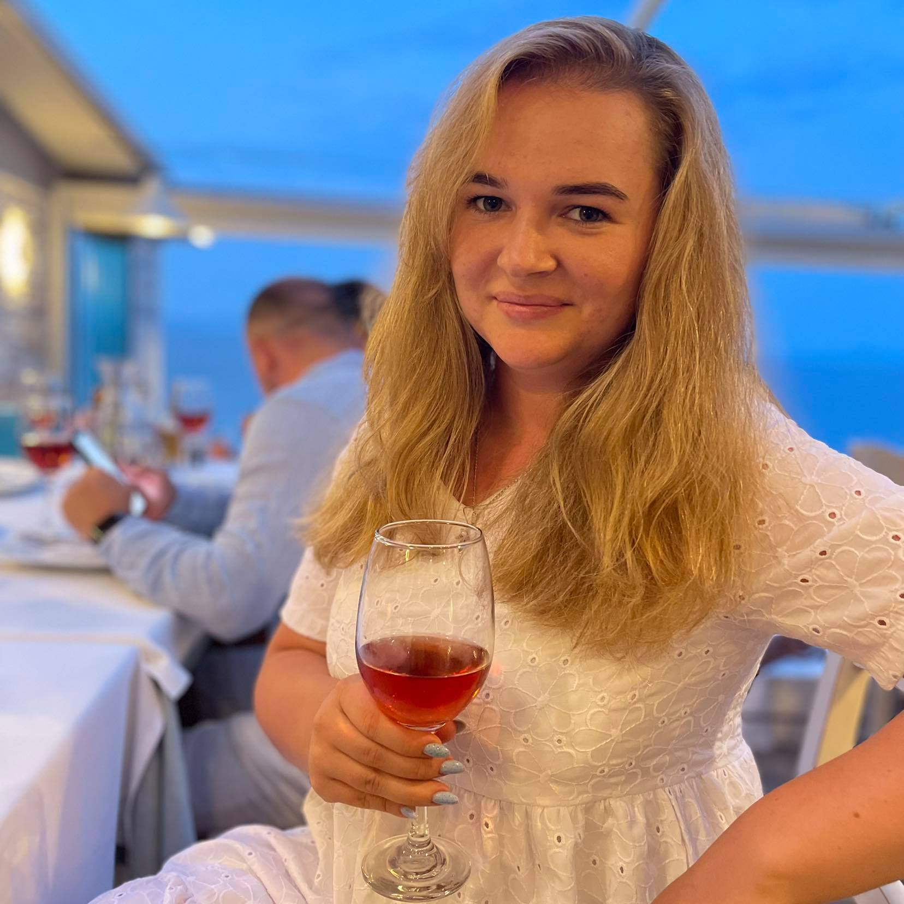
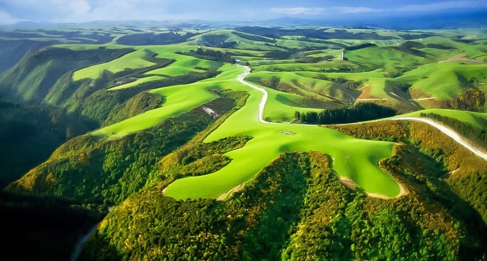

Народилася і проживаю у м.Львів. Закінчила 54 школу, потім НУЛП за спеціальністю - документознавство та інформаційна діяльність. Змінила багато місць праці, в основному пов'язаних з торгівлею. На даний моментхочу змінитисвій вид діяльності.
Я обожнюю подорожувати. Мрію об'їздити увесь світ. Ще з дитинства дуже хотіла відвідати Англію і потрапити на екскурсію про Гаррі Поттера. Ще однією великою мрією є відвідати Нову Зеландію. Ніколи не хотіла жити в жаркому кліматі, полюбляю зиму. Обов'язково хочу відвідати Норвегію та Фінляндію.Норвегія – найпівнічніша країна Європи. Слово «Норвегія» в перекладі означає «шлях на північ». 1/3 країни лежить на північ від Північного полярного кола, де сонце з травня по липень майже не заходить за обрій. У середині зими на крайній півночі майже всю добу триває полярна ніч, а на півдні світловий день продовжується всього кілька годин. Королівство Норвегія – держава в західній частині Скандинавського півострова, що межує зі Швецією, Фінляндією та Російською Федерацією.
